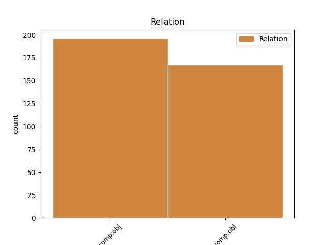
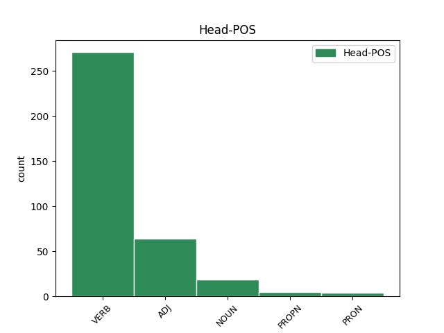
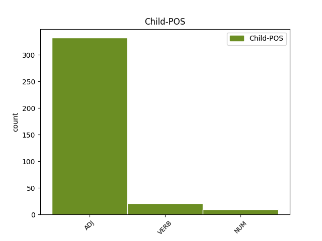

Distribution of features within this leaf



Agreement Rules sorted by frequency.
- When the dependent token is the oblique complements(comp:obl) of the head token, and the dependent token is ADJ.
1 nam _ _ _ _ 0 _ _ _
2 et _ _ _ _ 0 _ _ _
3 generale _ _ _ _ 0 _ _ _
4 quoddam _ _ _ _ 0 _ _ _
5 decorum _ _ _ _ 0 _ _ _
6 intellegimus _ _ _ _ 0 _ _ _
7 quod _ _ _ _ 0 _ _ _
8 in _ _ _ _ 0 _ _ _
9 omni _ _ _ _ 0 _ _ _
10 honestate _ _ _ _ 0 _ _ _
11 versatur _ _ _ _ 0 _ _ _
12 et _ _ _ _ 0 _ _ _
13 aliud _ _ _ _ 0 _ _ _
14 huic hic ADJ Pd Case=Dat|Gender=Neut|Number=Sing 15 comp:obl _ ref=1.96
15 subiectum subicio VERB V- Aspect=Perf|Case=Acc|Gender=Neut|Number=Sing|Tense=Past|VerbForm=Part|Voice=Pass 0 _ _ _
16 quod _ _ _ _ 0 _ _ _
17 pertinet _ _ _ _ 0 _ _ _
18 ad _ _ _ _ 0 _ _ _
19 singulas _ _ _ _ 0 _ _ _
20 partes _ _ _ _ 0 _ _ _
21 honestatis _ _ _ _ 0 _ _ _
1 esse _ _ _ _ 0 _ _ _
2 autem _ _ _ _ 0 _ _ _
3 magni _ _ _ _ 0 _ _ _
4 animi _ _ _ _ 0 _ _ _
5 et _ _ _ _ 0 _ _ _
6 fuisse _ _ _ _ 0 _ _ _
7 multos _ _ _ _ 0 _ _ _
8 etiam _ _ _ _ 0 _ _ _
9 in _ _ _ _ 0 _ _ _
10 vita _ _ _ _ 0 _ _ _
11 otiosa _ _ _ _ 0 _ _ _
12 qui _ _ _ _ 0 _ _ _
13 aut _ _ _ _ 0 _ _ _
14 investigarent _ _ _ _ 0 _ _ _
15 aut _ _ _ _ 0 _ _ _
16 conarentur _ _ _ _ 0 _ _ _
17 magna _ _ _ _ 0 _ _ _
18 quaedam _ _ _ _ 0 _ _ _
19 sese _ _ _ _ 0 _ _ _
20 que _ _ _ _ 0 _ _ _
21 suarum _ _ _ _ 0 _ _ _
22 rerum _ _ _ _ 0 _ _ _
23 finibus _ _ _ _ 0 _ _ _
24 continerent _ _ _ _ 0 _ _ _
25 aut _ _ _ _ 0 _ _ _
26 interiecti _ _ _ _ 0 _ _ _
27 inter _ _ _ _ 0 _ _ _
28 philosophos _ _ _ _ 0 _ _ _
29 et _ _ _ _ 0 _ _ _
30 eos _ _ _ _ 0 _ _ _
31 qui _ _ _ _ 0 _ _ _
32 rem _ _ _ _ 0 _ _ _
33 publicam _ _ _ _ 0 _ _ _
34 administrarent _ _ _ _ 0 _ _ _
35 delectarentur _ _ _ _ 0 _ _ _
36 re _ _ _ _ 0 _ _ _
37 sua _ _ _ _ 0 _ _ _
38 familiari _ _ _ _ 0 _ _ _
39 non _ _ _ _ 0 _ _ _
40 eam _ _ _ _ 0 _ _ _
41 quidem _ _ _ _ 0 _ _ _
42 omni _ _ _ _ 0 _ _ _
43 ratione _ _ _ _ 0 _ _ _
44 exaggerantes _ _ _ _ 0 _ _ _
45 ne _ _ _ _ 0 _ _ _
46 que _ _ _ _ 0 _ _ _
47 excludentes excludo VERB V- Case=Nom|Gender=Masc|Number=Plur|Tense=Pres|VerbForm=Part|Voice=Act 0 _ _ _
48 ab _ _ _ _ 0 _ _ _
49 eius _ _ _ _ 0 _ _ _
50 usu _ _ _ _ 0 _ _ _
51 suos suus ADJ Pt Case=Acc|Gender=Masc|Number=Plur|Person=3|Poss=Yes|Reflex=Yes 47 comp:obj _ ref=1.92
52 potius _ _ _ _ 0 _ _ _
53 que _ _ _ _ 0 _ _ _
54 et _ _ _ _ 0 _ _ _
55 amicis _ _ _ _ 0 _ _ _
56 impertientes _ _ _ _ 0 _ _ _
57 et _ _ _ _ 0 _ _ _
58 rei _ _ _ _ 0 _ _ _
59 publicae _ _ _ _ 0 _ _ _
60 si _ _ _ _ 0 _ _ _
61 quando _ _ _ _ 0 _ _ _
62 usus _ _ _ _ 0 _ _ _
63 esset _ _ _ _ 0 _ _ _
1 Cicero _ _ _ _ 0 _ _ _
2 qui _ _ _ _ 0 _ _ _
3 omnes _ _ _ _ 0 _ _ _
4 superiores _ _ _ _ 0 _ _ _
5 dies _ _ _ _ 0 _ _ _
6 praeceptis _ _ _ _ 0 _ _ _
7 Caesaris _ _ _ _ 0 _ _ _
8 cum _ _ _ _ 0 _ _ _
9 summa _ _ _ _ 0 _ _ _
10 diligentia _ _ _ _ 0 _ _ _
11 milites _ _ _ _ 0 _ _ _
12 in _ _ _ _ 0 _ _ _
13 castris _ _ _ _ 0 _ _ _
14 continuisset _ _ _ _ 0 _ _ _
15 ac _ _ _ _ 0 _ _ _
16 ne _ _ _ _ 0 _ _ _
17 calonem _ _ _ _ 0 _ _ _
18 quidem _ _ _ _ 0 _ _ _
19 quemquam _ _ _ _ 0 _ _ _
20 extra _ _ _ _ 0 _ _ _
21 munitionem _ _ _ _ 0 _ _ _
22 egredi _ _ _ _ 0 _ _ _
23 passus _ _ _ _ 0 _ _ _
24 esset _ _ _ _ 0 _ _ _
25 septimo _ _ _ _ 0 _ _ _
26 die _ _ _ _ 0 _ _ _
27 diffidens diffido VERB V- Case=Nom|Gender=Masc|Number=Sing|Tense=Pres|VerbForm=Part|Voice=Act 0 _ _ _
28 de _ _ _ _ 0 _ _ _
29 numero _ _ _ _ 0 _ _ _
30 dierum _ _ _ _ 0 _ _ _
31 Caesarem _ _ _ _ 0 _ _ _
32 fidem _ _ _ _ 0 _ _ _
33 servaturum servo VERB V- Case=Acc|Gender=Masc|Number=Sing|Tense=Fut|VerbForm=Part|Voice=Act 27 comp:obj _ ref=6.36.1
34 quod _ _ _ _ 0 _ _ _
35 longius _ _ _ _ 0 _ _ _
36 progressum _ _ _ _ 0 _ _ _
37 audiebat _ _ _ _ 0 _ _ _
38 ne _ _ _ _ 0 _ _ _
39 que _ _ _ _ 0 _ _ _
40 ulla _ _ _ _ 0 _ _ _
41 de _ _ _ _ 0 _ _ _
42 reditu _ _ _ _ 0 _ _ _
43 eius _ _ _ _ 0 _ _ _
44 fama _ _ _ _ 0 _ _ _
45 adferebatur _ _ _ _ 0 _ _ _
46 simul _ _ _ _ 0 _ _ _
47 eorum _ _ _ _ 0 _ _ _
48 permotus _ _ _ _ 0 _ _ _
49 vocibus _ _ _ _ 0 _ _ _
50 qui _ _ _ _ 0 _ _ _
51 illius _ _ _ _ 0 _ _ _
52 patientiam _ _ _ _ 0 _ _ _
53 paene _ _ _ _ 0 _ _ _
54 obsessionem _ _ _ _ 0 _ _ _
55 appellabant _ _ _ _ 0 _ _ _
56 si _ _ _ _ 0 _ _ _
57 quidem _ _ _ _ 0 _ _ _
58 ex _ _ _ _ 0 _ _ _
59 castris _ _ _ _ 0 _ _ _
60 egredi _ _ _ _ 0 _ _ _
61 non _ _ _ _ 0 _ _ _
62 liceret _ _ _ _ 0 _ _ _
63 nullum _ _ _ _ 0 _ _ _
64 eius _ _ _ _ 0 _ _ _
65 modi _ _ _ _ 0 _ _ _
66 casum _ _ _ _ 0 _ _ _
67 exspectans _ _ _ _ 0 _ _ _
68 quo _ _ _ _ 0 _ _ _
69 novem _ _ _ _ 0 _ _ _
70 oppositis _ _ _ _ 0 _ _ _
71 legionibus _ _ _ _ 0 _ _ _
72 maximo _ _ _ _ 0 _ _ _
73 que _ _ _ _ 0 _ _ _
74 equitatu _ _ _ _ 0 _ _ _
75 dispersis _ _ _ _ 0 _ _ _
76 ac _ _ _ _ 0 _ _ _
77 paene _ _ _ _ 0 _ _ _
78 deletis _ _ _ _ 0 _ _ _
79 hostibus _ _ _ _ 0 _ _ _
80 in _ _ _ _ 0 _ _ _
81 milibus _ _ _ _ 0 _ _ _
82 passuum _ _ _ _ 0 _ _ _
83 tribus _ _ _ _ 0 _ _ _
84 offendi _ _ _ _ 0 _ _ _
85 posset _ _ _ _ 0 _ _ _
86 quinque _ _ _ _ 0 _ _ _
87 cohortes _ _ _ _ 0 _ _ _
88 frumentatum _ _ _ _ 0 _ _ _
89 in _ _ _ _ 0 _ _ _
90 proximas _ _ _ _ 0 _ _ _
91 segetes _ _ _ _ 0 _ _ _
92 mittit _ _ _ _ 0 _ _ _
93 quas _ _ _ _ 0 _ _ _
94 inter _ _ _ _ 0 _ _ _
95 et _ _ _ _ 0 _ _ _
96 castra _ _ _ _ 0 _ _ _
97 unus _ _ _ _ 0 _ _ _
98 omnino _ _ _ _ 0 _ _ _
99 collis _ _ _ _ 0 _ _ _
100 intererat _ _ _ _ 0 _ _ _
1 vocans voco VERB V- Case=Nom|Gender=Masc|Number=Sing|Tense=Pres|VerbForm=Part|Voice=Act 0 _ _ _
2 autem _ _ _ _ 0 _ _ _
3 Paulus _ _ _ _ 0 _ _ _
4 ad _ _ _ _ 0 _ _ _
5 se _ _ _ _ 0 _ _ _
6 unum unus NUM Ma Case=Acc|Gender=Masc|Number=Sing 1 comp:obj _ ref=ACTS_23.17
7 ex _ _ _ _ 0 _ _ _
8 centurionibus _ _ _ _ 0 _ _ _
9 ait _ _ _ _ 0 _ _ _
1 post _ _ _ _ 0 _ _ _
2 haec _ _ _ _ 0 _ _ _
3 autem _ _ _ _ 0 _ _ _
4 duobus duo NUM Ma Case=Dat|Gender=Masc|Number=Plur 8 comp:obl _ ref=MARK_16.12
5 ex _ _ _ _ 0 _ _ _
6 eis _ _ _ _ 0 _ _ _
7 ambulantibus _ _ _ _ 0 _ _ _
8 ostensus ostendo VERB V- Aspect=Perf|Case=Nom|Gender=Masc|Number=Sing|Tense=Past|VerbForm=Part|Voice=Pass 0 _ _ _
9 est _ _ _ _ 0 _ _ _
10 in _ _ _ _ 0 _ _ _
11 alia _ _ _ _ 0 _ _ _
12 effigie _ _ _ _ 0 _ _ _
13 euntibus _ _ _ _ 0 _ _ _
14 in _ _ _ _ 0 _ _ _
15 villam _ _ _ _ 0 _ _ _
1 ita _ _ _ _ 0 _ _ _
2 ut _ _ _ _ 0 _ _ _
3 facti facio VERB V- Aspect=Perf|Case=Nom|Gender=Masc|Number=Plur|Tense=Past|VerbForm=Part|Voice=Pass 0 _ _ _
4 sitis _ _ _ _ 0 _ _ _
5 forma _ _ _ _ 0 _ _ _
6 omnibus _ _ _ _ 0 _ _ _
7 credentibus credo VERB V- Case=Dat|Gender=Masc|Number=Plur|Tense=Pres|VerbForm=Part|Voice=Act 3 comp:obl _ ref=1THESS_1.7
8 in _ _ _ _ 0 _ _ _
9 Macedonia _ _ _ _ 0 _ _ _
10 et _ _ _ _ 0 _ _ _
11 in _ _ _ _ 0 _ _ _
12 Achaia _ _ _ _ 0 _ _ _
Disagree Examples:
1 haec hic ADJ Pd Case=Acc|Gender=Neut|Number=Plur 4 comp:obj _ ref=MATT_1.20
2 autem _ _ _ _ 0 _ _ _
3 eo _ _ _ _ 0 _ _ _
4 cogitante cogito VERB V- Case=Abl|Gender=Masc|Number=Sing|Tense=Pres|VerbForm=Part|Voice=Act 0 _ _ _
5 ecce _ _ _ _ 0 _ _ _
6 angelus _ _ _ _ 0 _ _ _
7 Domini _ _ _ _ 0 _ _ _
8 in _ _ _ _ 0 _ _ _
9 somnis _ _ _ _ 0 _ _ _
10 apparuit _ _ _ _ 0 _ _ _
11 ei _ _ _ _ 0 _ _ _
12 dicens _ _ _ _ 0 _ _ _
1 haec hic ADJ Pd Case=Acc|Gender=Neut|Number=Plur 3 comp:obj _ ref=MATT_9.18
2 illo _ _ _ _ 0 _ _ _
3 loquente loquor VERB V- Case=Abl|Gender=Masc|Number=Sing|Tense=Pres|VerbForm=Part|Voice=Act 0 _ _ _
4 ad _ _ _ _ 0 _ _ _
5 eos _ _ _ _ 0 _ _ _
6 ecce _ _ _ _ 0 _ _ _
7 princeps _ _ _ _ 0 _ _ _
8 unus _ _ _ _ 0 _ _ _
9 accessit _ _ _ _ 0 _ _ _
10 et _ _ _ _ 0 _ _ _
11 adorabat _ _ _ _ 0 _ _ _
12 eum _ _ _ _ 0 _ _ _
13 dicens _ _ _ _ 0 _ _ _
1 hominem _ _ _ _ 0 _ _ _
2 mollibus mollis ADJ A- Case=Abl|Degree=Pos|Gender=Neut|Number=Plur 3 comp:obl _ ref=MATT_11.8
3 vestitum vestio VERB V- Aspect=Perf|Case=Acc|Gender=Masc|Number=Sing|Tense=Past|VerbForm=Part|Voice=Pass 0 _ _ _
1 et _ _ _ _ 0 _ _ _
2 locutus loquor VERB V- Aspect=Perf|Case=Nom|Gender=Masc|Number=Sing|Tense=Past|VerbForm=Part|Voice=Pass 0 _ _ _
3 est _ _ _ _ 0 _ _ _
4 eis _ _ _ _ 0 _ _ _
5 multa multus ADJ A- Case=Acc|Degree=Pos|Gender=Neut|Number=Plur 2 comp:obj _ ref=MATT_13.3
6 in _ _ _ _ 0 _ _ _
7 parabolis _ _ _ _ 0 _ _ _
8 dicens _ _ _ _ 0 _ _ _
1 illis ille ADJ Pd Case=Dat|Gender=Masc|Number=Plur 5 comp:obl _ ref=MATT_13.11
2 autem _ _ _ _ 0 _ _ _
3 non _ _ _ _ 0 _ _ _
4 est _ _ _ _ 0 _ _ _
5 datum do VERB V- Aspect=Perf|Case=Nom|Gender=Neut|Number=Sing|Tense=Past|VerbForm=Part|Voice=Pass 0 _ _ _